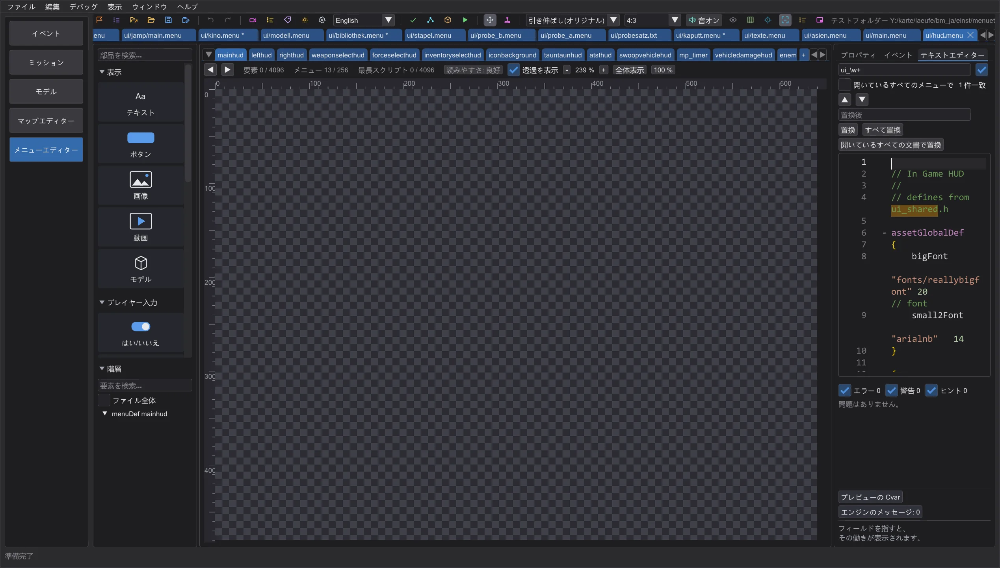
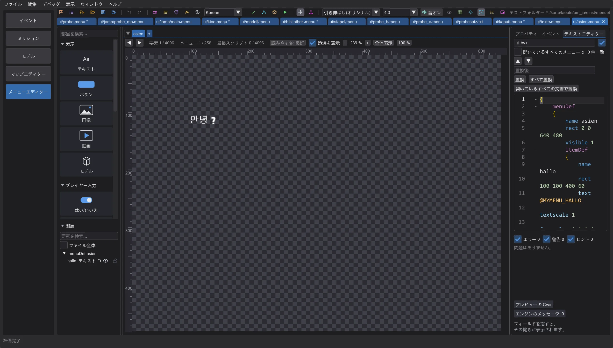

メニューエディター: HUD、アジア言語のテキスト、ライトセーバー
ゲームと同じ描き方で例の値を使って HUD を編集し、韓国語・日本語・中国語で独自テキストを書き、Movie Duels の全ブレードスタイルと黒いブレード、キャラクターの姿勢とサウンドをゲームと同じにします。
HUD エディター#

ui/hud.menu はほかのメニューと同じように開きます。ゲームはメニューだけで HUD を描くのではありません。ゲームコードが名前付き項目(health_tic1〜4、armor_tic…、force_tic…、ammo_tic…、healthamount、armoramount、forceamount、ammoamount、saberstyle_fast/medium/strong、frame)の位置・色・画像を読み、その上にプレイヤーの値で目盛り・数字・画像を描きます。プレビューはまさにそれを行います。プロパティの HUD の値(cgame が読む値) には体力・アーマー・フォース・弾薬・セーバースタイル・照準のスライダーがあり、満タンの目盛りは白、最後の目盛りは残りに応じて薄くなり、4 分の 1 未満のアーマーは点滅し、弾薬 0 は赤になります。項目を動かしたり色を変えたりすると HUD がすぐに追従します。
再現しているのは Jedi Academy のシングルプレイです。マルチプレイのゲームコードと Movie Duels は HUD を別の方法で描きます(整数刻み、HUD モード、ブロックポイント)。その場合プレビューはメニューだけを表示し、その旨を示します。
韓国語・日本語・中国語のテキスト#

テキスト には韓国語・台湾語(繁体字)・日本語・中国語もあります。普通に入力すれば、ファイルにはゲームのフォントがその言語を読むエンコーディング(KSC 5601、Big5、Shift-JIS、GB 2312)で書き込まれます。ほかの言語はメニューと同じく Latin-1 のままです。ゲームが 1 文字として表示できない文字(KSC 5601 外のハングルや半角カタカナなど)は ? として保存され、表の下に表示されます。プレビュー言語をこれらのいずれかにすると、ゲームの字形ページ(fonts/kor_…、jap_…、chi_…、tai_…)から、ゲームと同じ大きさ・間隔・倍率で文字を描きます。
Movie Duels のブレードスタイルと黒いブレード#
Movie Duels のデータでは、セーバーメニューはすべてのスタイルで cg_SFXSabers に従います: 0(Raven)、1 エピソード I、2 エピソード II、3 エピソード III、4 SFX(既定)、5 オリジナル三部作、6 ジェダイの帰還、7 フォースの覚醒、8 不安定、9 反乱者たち、10 クローン・ウォーズ、11 モール。それぞれ固有の光と芯の画像、大きさ(cg_SFXSabersGlowSize…、cg_SFXSabersCoreSize…)、形があります。不安定な柄には常に不安定なブレードが付きます。黒いブレードは合成方法どおりに描かれ、ゲームと同じく背後を暗くします。
キャラクターの姿勢とサウンド#
モデルのアニメーション(model_g2anim、キャラクターメニューでは ui_char_anim)は、ゲームが設定したとき(メニューの読み込み時、および uiScript character などのスクリプトがキャラクターを組み立てたとき)に始まり、ゲームのフレーム間隔で 2 フレーム間を補間しながら、ゲームと同じようにループまたは終了します。操作 では、スクリプトはゲームと同じ語を読みます。uiScript は名前とそのスクリプトに必要な語を、exec は 1 語を読み、; がなくても後続のコマンドは続けて実行されます。exec "music …" はコンソールと同じく BGM を開始します。